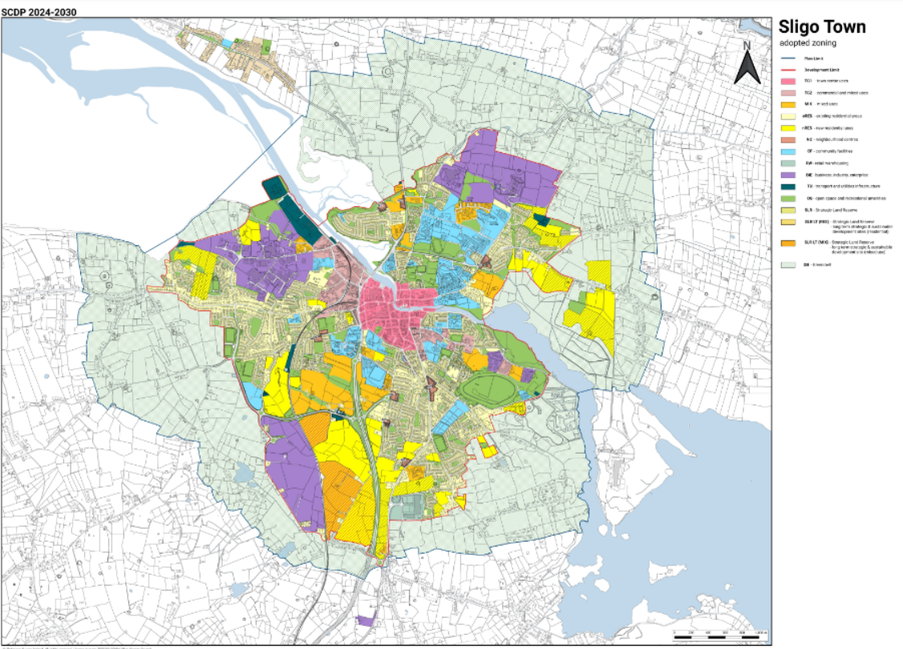
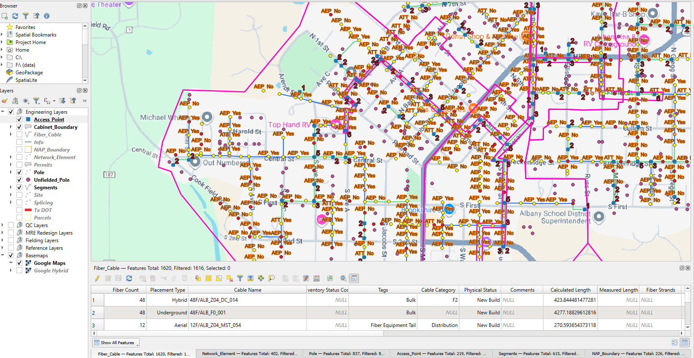
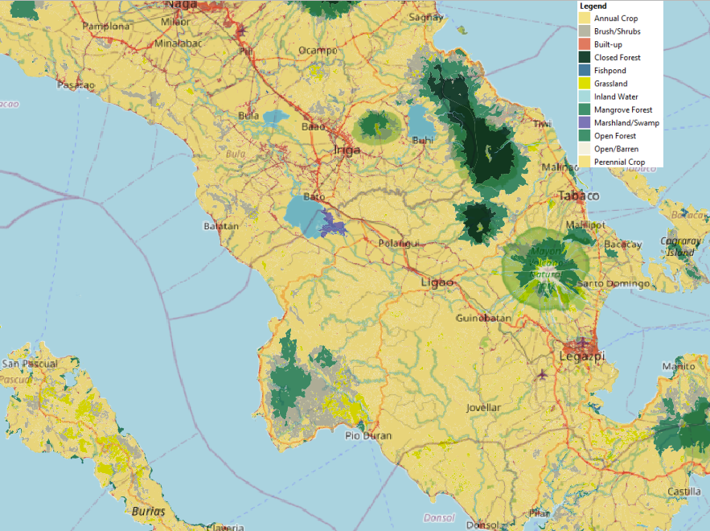
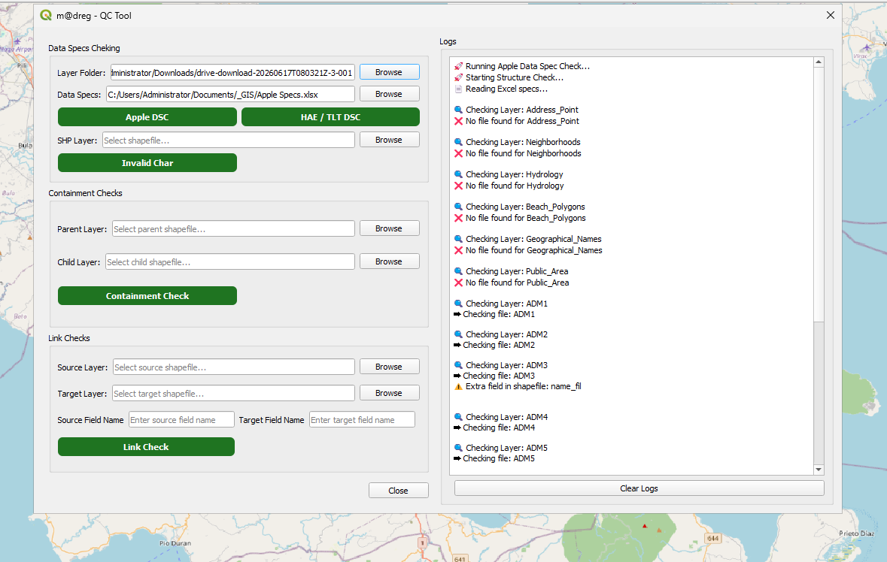
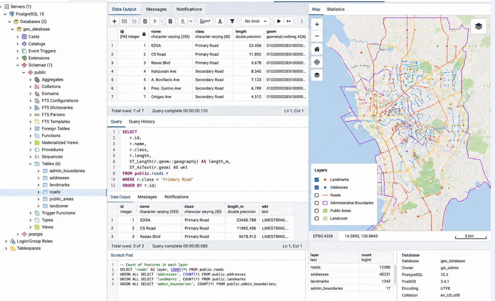

GIS Analysis

Delivery System
The Real-Time Delivery Area (RTA) and Branch Assignment System is a GIS-based solution designed to automatically identify the appropriate store branch and estimated delivery time based on a customer's location. Using service area polygons generated from a road network, the system determines which delivery zone contains the customer address and assigns the corresponding store branch responsible for fulfilling the order. This solution supports location-based decision-making and helps improve delivery efficiency by automating branch selection and delivery time estimation.
Land Use Mapping

Land Use Digitization and Georeferencing
Georeferenced and digitized land use planning maps using GIS technologies and a specialized digitization platform. Converted non-spatial planning documents into structured GIS datasets by interpreting zoning classifications, creating polygon features, assigning land use attributes, and performing quality assurance checks to ensure spatial accuracy and data integrity.
Fiber Network Mapping

Fiber Network Mapping and Infrastructure Management
This project involved the management, validation, and maintenance of telecommunications infrastructure data within a GIS environment. The work focused on mapping and maintaining fiber optic network assets, including poles, access points, network equipment, cabinets, service boundaries, and fiber cable routes. Using GIS tools, network components were spatially validated, updated, and organized to support network planning, construction, quality control, and operational decision-making. The project required extensive feature editing, spatial data management, and topology validation to ensure the accuracy and integrity of network assets. GIS workflows were utilized to analyze asset connectivity, verify spatial relationships, and maintain consistency across multiple infrastructure layers.
GIS Analysis

Philippine Land Cover Dynamics
This project focuses on the advanced cartographic design and visual communication of macro-level environmental datasets across the Philippine archipelago. Transforming complex vector data into a high-fidelity visual asset. By prioritizing visual hierarchy, custom color theory, the final outputs translate dense spatial attributes into clear, actionable insights regarding urban sprawl, agricultural boundaries, and critical conservation zones. Using GIS tools, network components were spatially validated, updated, and organized to support network planning, construction, quality control, and operational decision-making.
QGIS Plugin

QGIS QC Tool: Automated Geospatial Data Specification & Topology Validator
To eliminate manual verification bottlenecks and ensure strict data compliance, I developed a custom QGIS Python plugin that automates geospatial Quality Control (QC) pipelines. The tool serves as an interactive data-validation suite, enabling GIS teams to rapidly cross-reference vector datasets against official data specifications, validate schema attributes, and execute automated topological containment and link verification checks.
Spatial Data Management

Enterprise Geographic Database Management
Managed and maintained enterprise geospatial databases containing roads, addresses, landmarks, public areas, land cover, and administrative boundaries. Performed spatial data validation, feature updates, QA/QC workflows, and database maintenance using PostgreSQL/PostGIS and QGIS to support mapping and location-based services. Designed and optimized spatial database structures, including data organization, attribute management, and geometry validation to ensure data accuracy and consistency. Utilized SQL queries and PostGIS spatial functions for data extraction, analysis, troubleshooting, and maintaining high-quality geospatial datasets.
Spatial Analysis
Urban Population Density Mapping
This project involved the analysis and visualization of population density patterns across Metro Manila using GIS techniques and demographic datasets. The objective was to identify areas of high population concentration and understand spatial distribution trends that can support urban planning, infrastructure development, and public service allocation. Population density values were calculated, classified, and visualized using a choropleth mapping approach to highlight variations in residential concentration across different neighborhoods and administrative areas. The resulting map provides insights into urban growth patterns, population hotspots, and areas that may require additional infrastructure and community services.